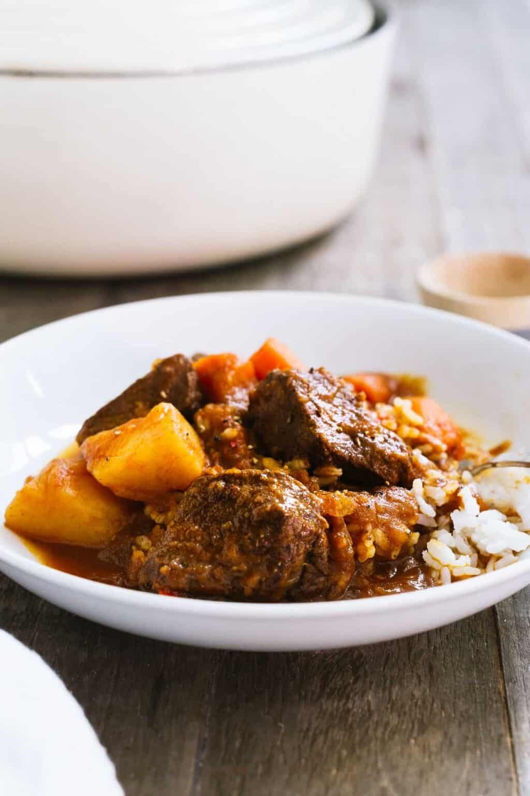

Mechado | Filipino Beef Stew
Comfort in the form of a hearty stew can be found in nearly every country’s cuisine, and the Philippines is no different. Mechado is the Philippine version of the ubiquitous comfort food with a wonderful depth of flavor that comes from browned garlic, marinated beef, and the complex flavors of patis, or fish sauce. When I first started dating my husband, having heard that he was a “beef and potatoes man,” I knew in an instant that Mechado would be the first dish I would cook for him. Over ten years of marriage later, and I think I made the right choice.

Preparation Time
| Total Time | 1 hour 50 minutes |
| Preparation Time | 30 minutes |
| Cooking Time | 1 hour 20 minutes |
Ingredients
- 1 1/2 lbs beef for stew
- juice of half a lemon
- 1/4 cup good dark soy sauce I like Silver Swan, found in Asian markets
- freshly ground black pepper to taste
- 3 tablespoons canola oil
- 3 cloves garlic minced or crushed
- 1 medium onion diced
- 1 teaspoon fish sauce (patis)
- 1 cup tomato sauce
- 1 1/2 cups water
- several dashes of Tabasco
- 2-3 cups beef stock
- 2 bay leaves
- 1 red bell pepper sliced
- 2 russet potatoes peeled and cut into 2 inch chunks
- 2 carrots peeled and chopped in 2 inch pieces
- kosher salt
- freshly ground black pepper
Instructions
- Step 1: Marinate beef in soy sauce, lemon, and black pepper for at least 30 minutes.
- Step 2: Brown garlic in oil and set aside.
- Step 3: Brown beef, working in batches if necessary (reserve the marinade).
- Step 4: Return beef to pot, add onions and season with fish sauce (patis).
- Step 5: When the onions are wilted, add tomato sauce and water and stir.
- Step 6: After about two minutes, add Tabasco, beef stock, 2 tablespoons of reserved marinade, bay leaves and bell pepper.
- Step 7: Let come to a boil, then lower heat to simmer. Add reserved garlic. Cover the pot with the lid, and let it stew for about 1 1/2 hours (see notes), stirring occasionally.
- Step 8: When the meat is tender, add potatoes and carrots. Continue cooking until the potatoes are fork tender, about 20 minutes more.
- Step 9: Season with salt and pepper to taste. Serve over rice.
- Note on simmering the stew: In general, it takes about 45 minutes for the meat to just start getting tender. Check the beef at this time and continue cooking as necessary. I usually try to simmer for about 45 minutes to an hour, longer if I want it really tender – the longer it cooks, the better it tastes.
- Using a pressure cooker (e.g. Instant Pot): Mechado is delicious when made in a pressure cooker. At the point where it is time to simmer the stew, cook in a pressure cooker for 30 minutes at high pressure. Then add the potatoes and carrots and cook again for about 10-15 minutes on high pressure. Allow the mechado to simmer in your pressure cooker, uncovered, afterward to reduce the liquid a bit more.
Notes
Nutrition Table
| Calories | 566kcal |
| Carbohydrates | 32g |
| Protein | 54g |
| Fat | 24g |
| Saturated Fat | 5g |
| Cholesterol | 132mg |
| Sodium | 1581mg |
| Potassium | 1486mg |
| Fiber | 4g |
| Sugar | 8g |
| Vitamin A | 6290IU |
| Vitamin C | 52.9mg |
| Calcium | 68mg |
| Iron | 6.6mg |